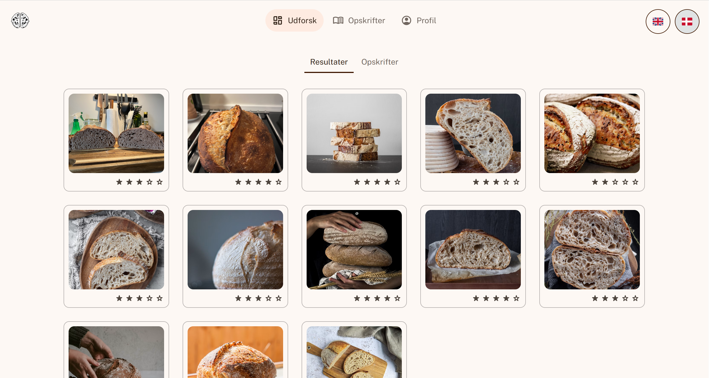
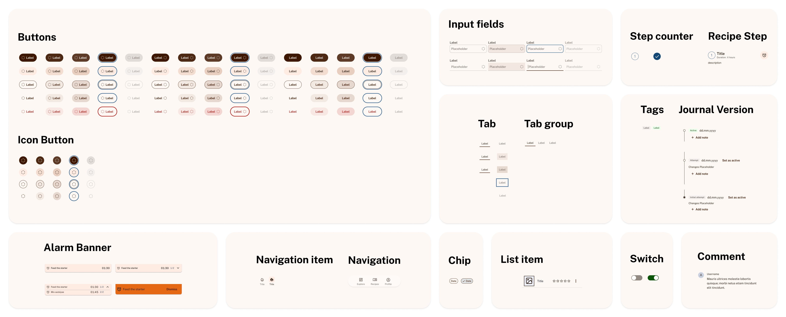
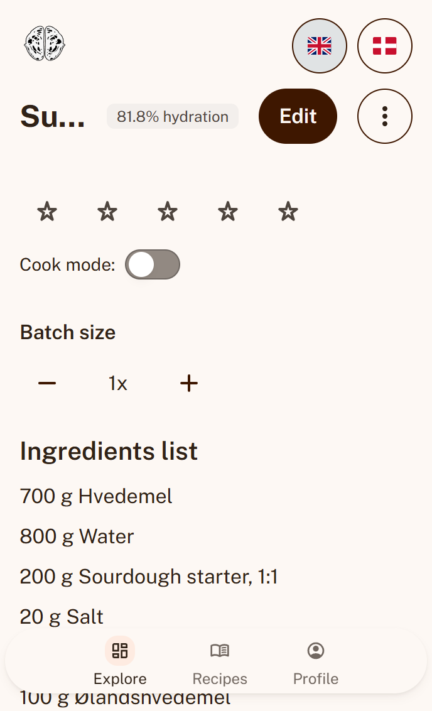
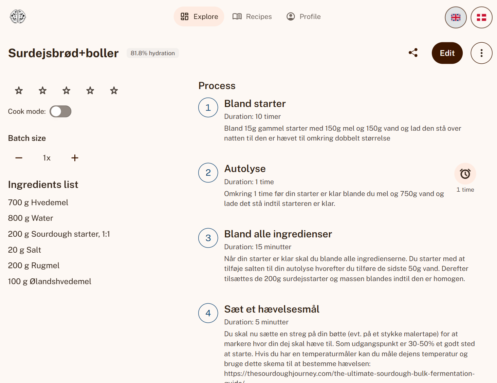
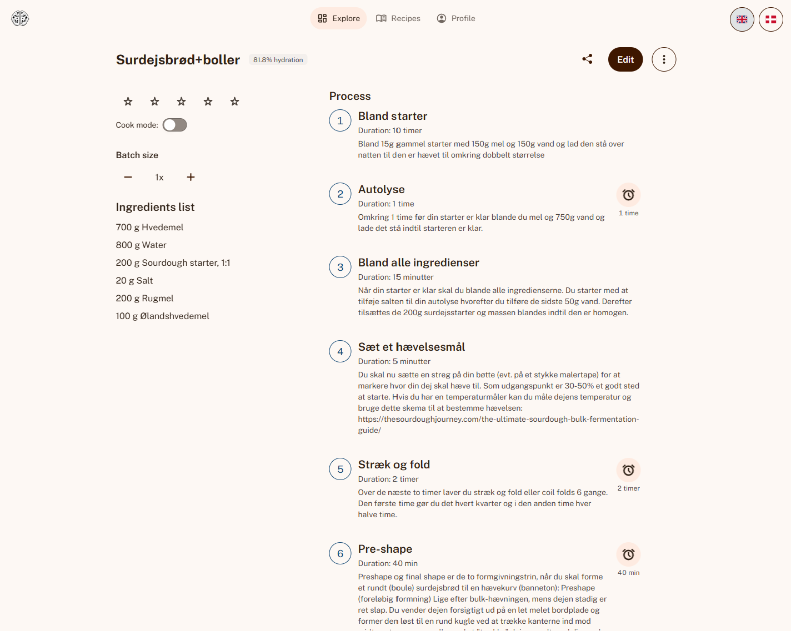
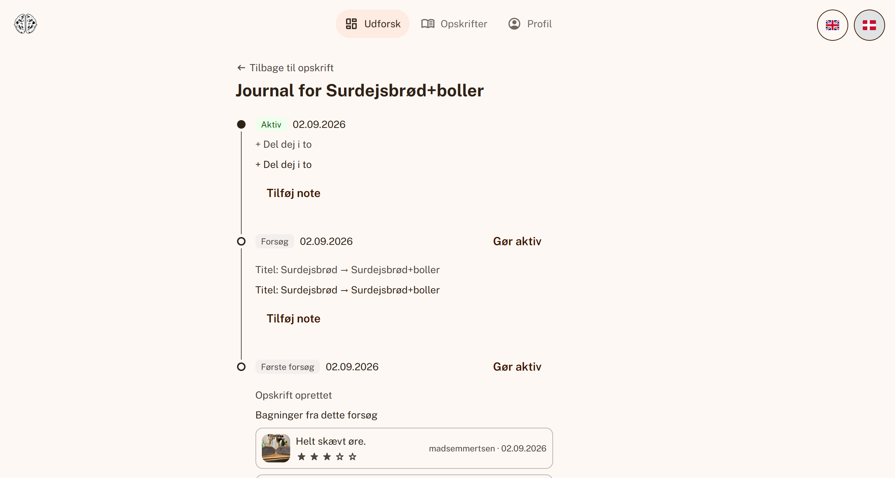
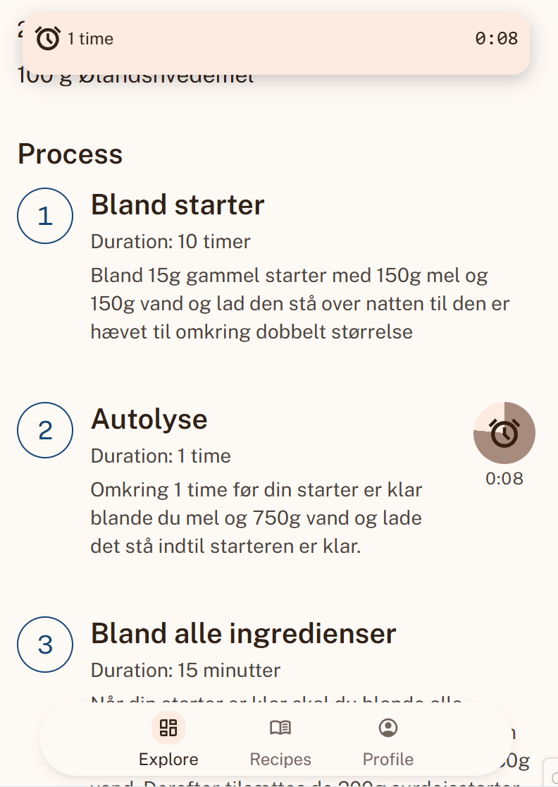
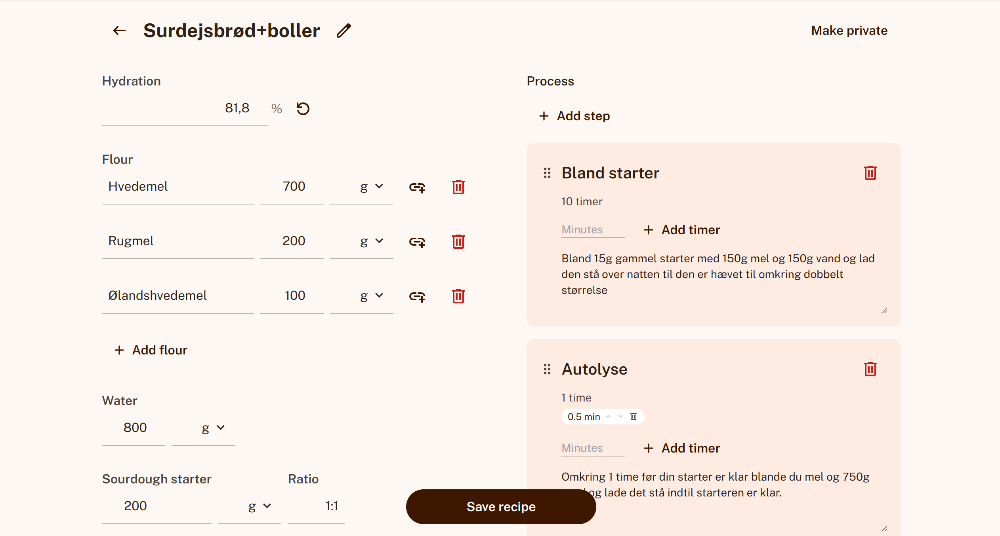

As someone who has had the pleasure of discovering the journey of making sourdough loaves, I wanted to create a tool that could support me while I bake and help me track my progress — a recipe manager and baking journal for sourdough bakers, designed and built in close collaboration with Claude (Anthropic's AI). Som en, der har haft fornøjelsen af at opdage rejsen med at bage surdejsbrød, ville jeg skabe et værktøj, der kunne støtte mig undervejs og hjælpe mig med at følge min udvikling — en opskriftshåndterings- og bagejournal til surdejsbagere, designet og bygget i tæt samarbejde med Claude (Anthropics AI).

Sourdough baking is inherently iterative — the same base recipe gets tweaked bake after bake, making it easy to lose track of what changed and whether it actually improved the final loaf. Surdejsbagning er i sagens natur iterativt — den samme grundopskrift bliver justeret bagning efter bagning, hvilket gør det let at miste overblikket over, hvad der er ændret, og om det rent faktisk forbedrede det færdige brød.
Most recipe apps treat a recipe as a static document. Sourdough bakers need something closer to a lab notebook — a system that maintains a clear history of modifications and makes it effortless to review or revert to previous iterations. De fleste opskrift-apps behandler en opskrift som et statisk dokument. Surdejsbagere har brug for noget tættere på en laboratoriejournal — et system, der bevarer en klar historik over ændringer og gør det nemt at gennemgå eller vende tilbage til tidligere iterationer.
The project began with low-fidelity wireframes before moving into a fully realized Figma component library — around 19 components with comprehensive variants, from core buttons to custom history-timeline elements — before a single line of app code was written. From there, the design system served as the foundation for building a fully functional web app. Projektet startede med low-fidelity wireframes, før det bevægede sig videre til et fuldt udbygget Figma-komponentbibliotek — omkring 19 komponenter med omfattende varianter, fra grundlæggende knapper til specialbyggede historik-tidslinjeelementer — før en eneste linje kode blev skrevet. Derfra fungerede designsystemet som fundamentet for at bygge en fuldt funktionel webapp.

Navigating unfamiliar architectural territory, the technology stack — React, Vite, Tailwind CSS, and Supabase, handling auth, database, and storage — was selected as tech-stack in collaboration with Claude. Undervejs i projektet blev React, Vite, Tailwind CSS og Supabase til at håndtere auth, database og storage valgt som tech-stack i samarbejde med Claude.
Development was a true back-and-forth dialogue rather than a traditional handoff. Pointing out UI friction or mobile layout breaks allowed for rapid, live iteration directly in the browser until the execution matched the design intent. Udviklingen var en frem-og-tilbage-dialog snarere end en traditionel aflevering. Ved at pege på UI-friktion eller brud i mobillayoutet kunne der ske hurtig, live iterering direkte i browseren, indtil resultatet matchede designintentionen.



Major feature pivots evolved organically as the design changed and slowly settled. For example, the Journal feature underwent a complete redesign because the initial implementation drifted too heavily into version-control jargon — numbered versions, "restore" as the primary action. Større ændringer i funktioner opstod organisk mens designet ændrede sig og gradvist fandt sin form. For eksempel gennemgik Journal-funktionen et komplet redesign, fordi den oprindelige implementering bevægede sig for langt over i versionsstyrings-jargon — nummererede versioner, "gendan" som den primære handling.
Transforming a vague critique into a streamlined UX meant pivoting back to the core purpose: documenting an experiment and evaluating its results. At forvandle en vag kritik til et strømlinet UX betød, at jeg måtte vende tilbage til formålet med det hele: at dokumentere et eksperiment og evaluere resultaterne.

Smaller features — such as the step-timer alarm and the live language toggle — followed the exact same iterative loop: identifying a real-world friction point and shaping the solution collaboratively. Mindre funktioner — såsom trin-timerens alarm og det live sprogskift — fulgte præcis samme iterative forløb: at identificere et reelt friktionspunkt i den virkelige verden og forme løsningen i fællesskab.


The project resulted in a fully working, deployed multi-user application rather than a high-fidelity mockup — live at sourdough-app-rust.vercel.app. Projektet resulterede i en fuldt fungerende, driftsat multibruger-applikation frem for en detaljeret mockup — live på sourdough-app-rust.vercel.app.
Honestly, it's a bit overkill for a typical UX design exercise, but it was fun to create something that functions as an actual live product (barring real-world production security considerations). The primary takeaway is how accessible it's becoming to build fully working software with these new technologies. It bridges the gap between designers and developers, making handoffs smoother and allowing developers to potentially pull structural or component work straight from the prototype. Ærligt talt er det lidt overkill til en typisk UX-designøvelse, men det var sjovt at skabe noget, der fungerer som et rigtigt, live produkt (bortset fra reelle produktionssikkerhedshensyn). Den primære læring er, hvor tilgængeligt det er ved at blive at bygge fuldt fungerende software med disse nye teknologier. Det bygger bro mellem designere og udviklere, gør overleveringer smidigere og gør det muligt for udviklere potentielt at trække struktur- eller komponentarbejde direkte fra prototypen.
At the same time, this workflow introduces a new kind of challenge: adding features has never been easier. Because of that, revisiting the original design vision and maintaining strict discipline is more critical than ever. Samtidig introducerer denne arbejdsgang en ny slags udfordring: det har aldrig været nemmere at tilføje funktioner. Derfor er det vigtigere end nogensinde at genbesøge den oprindelige designvision og fastholde streng disciplin.